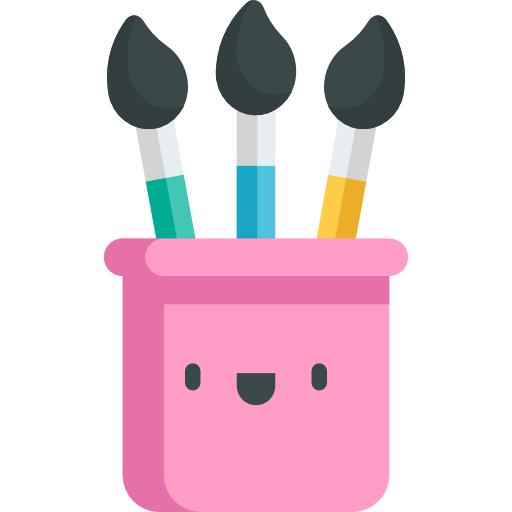

Our Mission
Welcome to our platform, where personal journaling meets meaningful social connections. Our mission is to empower you to:
- Create personalized journal entries, to-do lists, and daily highlights.
- Share your thoughts and accomplishments with close friends.
- Collaborate on tasks, inspire one another, and celebrate wins together.
How It Works
Our platform is designed to make journaling and task management more engaging and interactive. Here’s how you can use it:
- Write and save private or shared journal entries.
- Invite friends to view your daily tasks and plans.
- Share daily highlights and explore what your friends are up to on the Home Feed.
Whether you’re looking to organize your day, reflect on your thoughts, or collaborate with friends, this platform is here to support you every step of the way.
